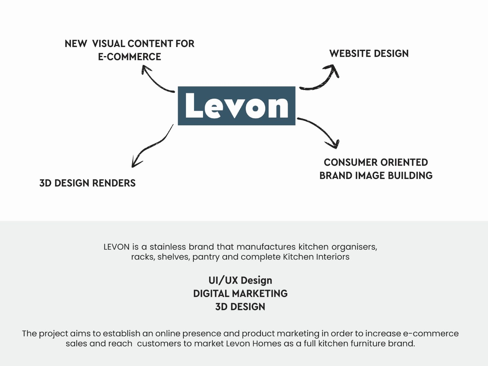
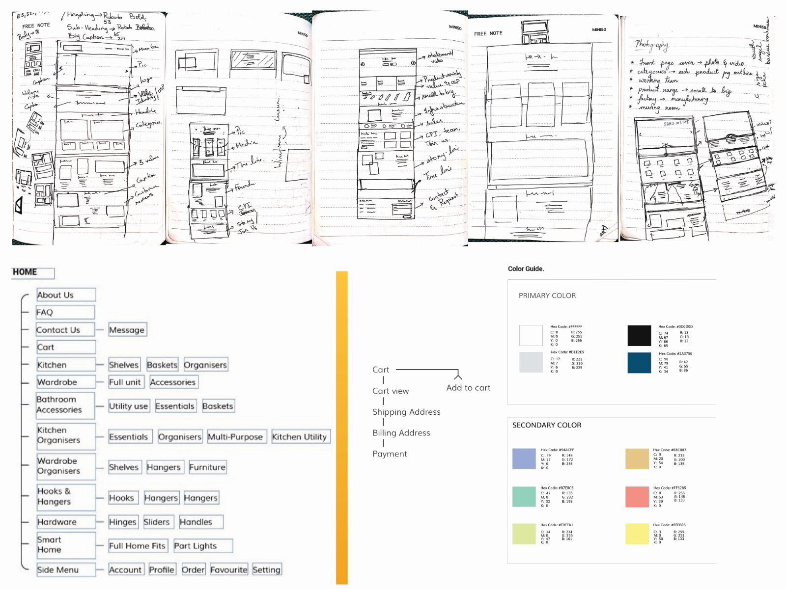
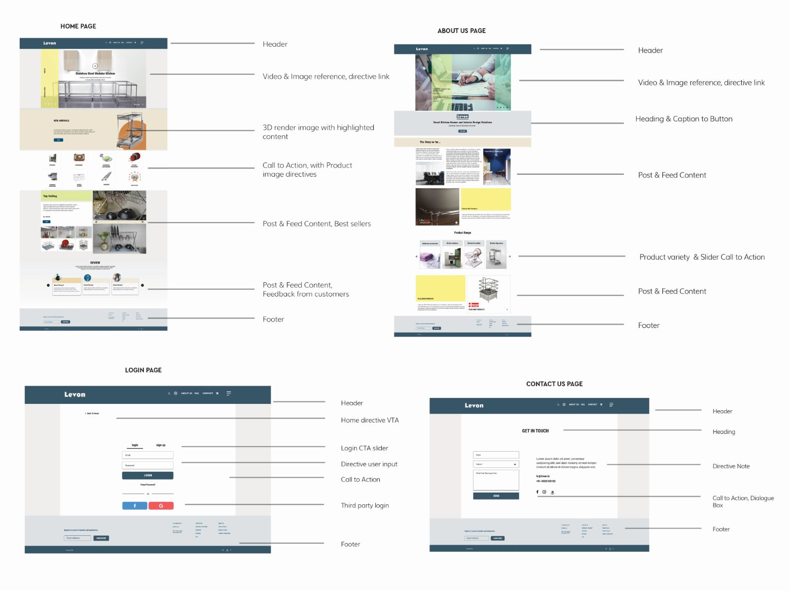
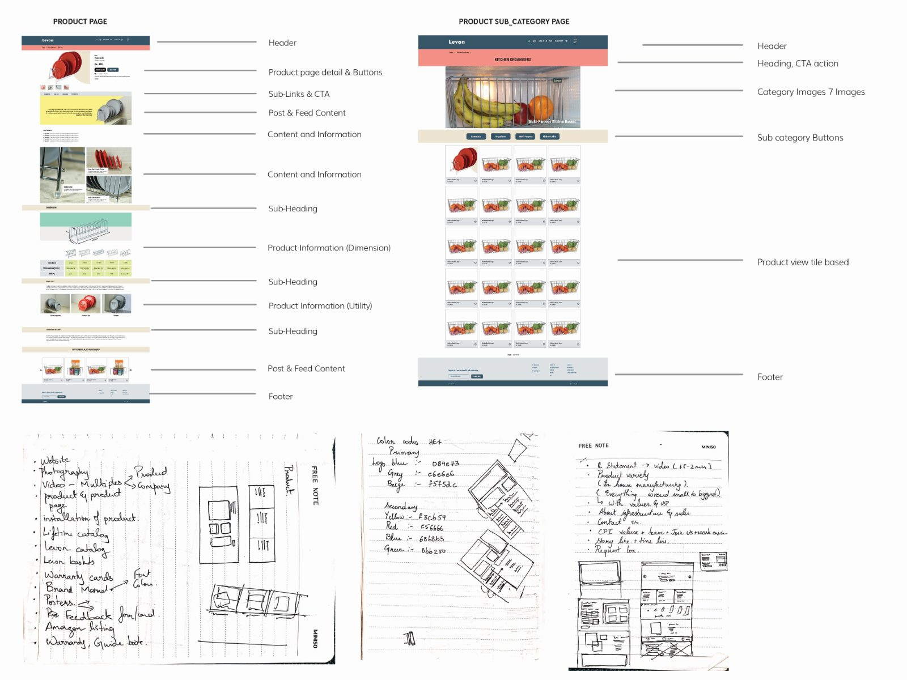

Levon
Levon is a stainless steel brand that manufactures kitchen organisers, racks, shelves, pantry and complete kitchen interiors. The project aims to establish an online presence and product marketing in order to increase e-commerce sales and market Levon Homes as a full kitchen furniture brand.
A manufacturer with 2,000 products and ten website orders a month.
Levon began in 1985 as Lifetime Wire Products, a team of engineers making stainless steel goods built for hard Indian use, and was renamed in 2012. It now manufactures for groups including Godrej and Häfele, reaches more than 150 dealers, and carries over 2,000 products across five sub-brands.
The problem was the gap between that scale and its own channel. Retail and marketplace listings brought in around 600 orders a day; the company's own website brought in about ten a month. It had been built in a hurry, served mostly as a contact form, and showed almost none of the range.
- 1985Founded as Lifetime Wire Products; renamed Levon in 2012.
- 2,000+Products, from hooks and organisers to complete kitchen interiors.
- 600 / dayOrders through retail and marketplaces, against ten a month on their own site.
Five phases, research first.
The work started with interviews with the owners and a competitor review, then moved through architecture, a style guide, and progressively higher fidelity. Type is Roboto Condensed over Roboto; the primary colour is #365567, the blue-grey carried through every wireframe here.
- Phase 1Brand research, user scenarios, personas, information architecture.
- Phase 2UI style guide, colour scheme, font guide, log-in and icon styles.
- Phase 3Apex sketches, wireframes, low fidelity.
- Phase 4High fidelity, client and user feedback, feedback testing.
- Phase 5Prototyping, final onboarding, UI flow.
A second project reworked the Lifetime Champion app into a Levon app for the same audience — contractors, labourers and carpenters, who redeem promo codes against points for goods. The company treats them as a marketing channel in their own right, since customers ask carpenters for advice.
Four spreads.




Constraints, recorded honestly in the project document: no front-end developer, limited resources from the organisation, and no in-house knowledge of the page builder the site had to be delivered in.